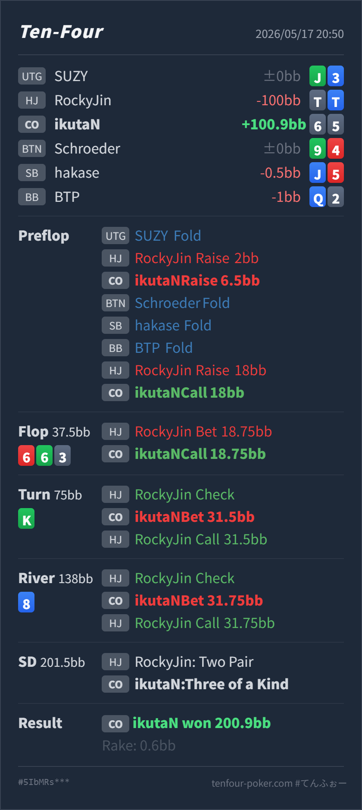

T4 HAND REVIEW
CO 6♠5♠ の HJ 4bet pot / trips value レビュー
GTO基準では、HJ openに対するCO 6♠5♠ の3betは低頻度のbluff候補としてならあり得ますが、HJの4betにcallするのは広すぎます。flopでtripsを作ってからのcall、turn bet、river all-inは良いですが、主な改善点はpreflopで低いsuited connectorを4bet potまで持ち込まないことです。
Hero: CO
6♠ 5♠Villain: HJ
T♠ T♦Board:
6♥ 6♣ 3♠ K♣ 8♦- 主要論点: HJ
2BBopenにCOで6♠5♠を3betし、HJの4bet18BBにcallしてよいか。 - GTO基準の総評: 3bet size
6.5BBは2BB openへのIP 3betとして自然です。ただし65sはCO vs HJでは境界寄りで、4betを受けた後はfoldが標準です。 - 次回の判断基準: low suited connectorを3bet bluffに使う場合でも、4betに対するcontinueまでセットで決めます。4bet後のSPRが低いと、straight/flushの実現率や implied odds が足りません。
- 5枚役確認: River時点のHeroは
6♠ 6♥ 6♣ K♣ 8♦のthree of a kindです。VillainはT♠ T♦ 6♥ 6♣ K♣のtwo pairで、Heroが勝っています。
ハンド要約
- Hero
- CO
6♠ 5♠ - Villain
- HJ
T♠ T♦ - 形式
- T4 6MAX Cash
- Preflop
- UTG fold, HJ Villain raise
2BB, CO Hero raise6.5BB, BTN fold, SB fold, BB fold, HJ Villain raise18BB, CO Hero call - Board
6♥ 6♣ 3♠ K♣ 8♦- Flop
- Pot
37.5BB, HJ Villain bet18.75BB, CO Hero call - Turn
- Pot
75BB, HJ Villain check, CO Hero bet31.5BB, HJ Villain call - River
- Pot
138BB, HJ Villain check, CO Hero bet31.75BB, HJ Villain call - Showdown
- HJ Villain two pair, CO Hero three of a kind
- Result
- CO Hero won
200.9BB, rake0.6BB

判断のズレ
| 論点 | その場で置きがちな見立て | どこがズレやすいか | 次回の基準 |
|---|---|---|---|
| 65sの3bet | suited connectorなのでCOから押し返せそう | 3bet自体は低頻度候補ですが、HJ open相手では下限寄りです。相手が4betしてきた時点で、相手レンジはかなり強くなります。 | 65sは3bet bluff候補でも、4betには基本fold |
| 4bet call | IPで価格もあるのでflopを見られそう | 追加call額だけを見ると守れそうでも、4bet potはSPRが低く、65sの強みである深いpostflop実現が消えます。 | 4bet callはraw equityではなく、条件付きレンジとSPRで見る |
| trips後の取り切り | tripsなのでどこかで強く取りたい | HJの4bet rangeはoverpair/AKが多く、663 ではHeroがかなり隠れた強ハンドです。raiseで逃がすより、flop callからturn以降でstackを入れる形が自然です。 | 4bet potで隠れtripsを作ったら、相手のoverpairを残して取り切る |
ストリート別レビュー
| ストリート | その時点の見え方 | 実ハンドの位置づけ | 評価 | その場の一手 |
|---|---|---|---|---|
| Preflop 3bet | HJが基準サイズの 2BB でopenし、COから3betする場面です。 | 6♠5♠ はplayabilityはありますが、CO vs HJでは下限のbluff候補です。 | 3betは許容 / 低頻度 | 6.5BB のサイズは自然です。ただし相手が4bet多めでなければ、callやfold寄りに落としてよい候補です。 |
| Preflop 4bet対応 | HJが 18BB へ4betし、Heroは追加 11.5BB を求められています。 | HJの4bet rangeはTT+/AK/AQ系にかなり寄り、65sはequity実現が悪いです。 | 広すぎ | ここはfoldが標準です。IPでもSPRが低く、straight/flushを引いて大きく取る価格になりにくいです。 |
Flop 6♥ 6♣ 3♠ | HJが半pot c-betしています。HJはoverpairとAKを多く持ち、Heroの6xはほぼ見えにくいです。 | Heroはthree of a kindで、HJの大半のvalueに大きく勝っています。 | 良い | callで良いです。raiseするとoverpair以外を落としやすく、相手の継続betやturn callを残しにくくなります。 |
Turn K♣ | HJがcheckし、Heroが約42% potをbetしています。KはAKを改善させ、KKには負けますが、AA/QQ/JJ/TTもまだ残ります。 | Heroは引き続き強いtripsです。full houseには負けますが、相手のoverpair/AKからvalueを取れます。 | 良い | 31.5BB betは良いです。riverに自然な残りstackを作れており、取り切る設計になっています。 |
River 8♦ | HJがcheckし、Heroの残り 31.75BB を入れる場面です。 | Heroはthree of a kindで、HJのTT/QQ/JJ/AA/AKからcallを期待できます。 | 良い | all-inで問題ありません。ここでcheck backすると、4bet potで作った強いhandのvalueを取り逃します。 |
持ち帰り
- postflopはかなり良いです。flopでraiseせずcallに留め、turnからbetしてriverまでstackを入れる流れは、HJのoverpairを残して取り切れています。
- 修正点はpreflopです。
65sは3bet bluff候補にできても、HJの4betにcallするhandではありません。 - 4bet potでは「IPで安く見られる」より、相手の条件付きレンジが強いことと、SPRが低くなることを優先します。
- low suited connectorは、深いSPRでstraight/flushを作って大きく取るのが強みです。今回のようにpreflopでpotが大きくなりすぎると、その強みがかなり薄れます。
- 今回は最高に近いflopを引いて取り切れましたが、この結果を理由に4bet callを標準化しない方が安定します。
exploit 補足
- HJがTTを4betして、
663K8で最後までcallしているため、相手はoverpairを大きく降ろしにくいタイプかもしれません。この傾向があるなら、postflopで強く完成した時は今回のように素直にvalueを取り切る調整が有効です。 - ただし、そのreadがあってもpreflopの4bet callを広げるより、強いvalue handで3betし、postflopでoverpairから取り切る方が再現性は高いです。